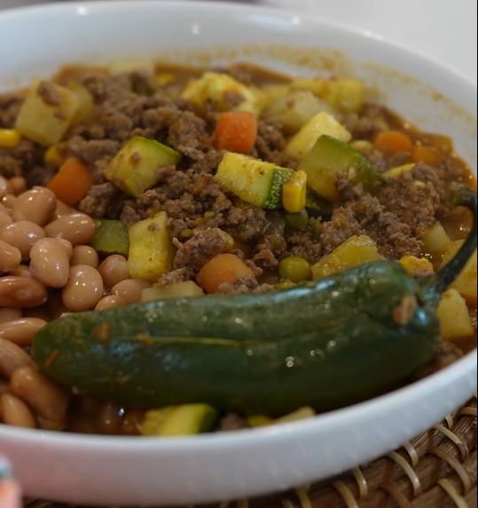

Ingredients
For the sauce:
- 4 Roma tomatoes
- 2 jalapeños
- 3 serranos
- 1/4 white onion
- 2 garlic cloves
- 1 tbsp chicken bouillon
- 1 tsp oregano
For the picadillo:
- 1/2 onion
- 2 lbs lean ground beef
- 1 tbsp chili powder
- 2 tsp garlic powder
- 2 tsp ground cumin
- 2 tsp onion powder
- 2 tsp black pepper
- 1 tbsp salt
- 3 small diced potatoes
- 8 oz chopped baby carrots
- 1/4-1/2 cup tomato sauce
- 1 cup peas
- 1 cup sweet corn
- 2 cups Mexican squash
Directions
For the sauce:
- Boil 4 roma tomatoes, 2 jalapenos, 3 serranos. Transfer to a blender along with 1/4 white onion, 2 garlic cloves, 1/2 cup water, chicken bouillon, and oregano. Blend until smooth.
For the picadillo:
- Over medium-high heat, with a skillet, heat up oil. Saute onions until tender then add ground beef. Season with chili powder, garlic powder, cumin, onion powder, black pepper and salt. Break down ground beef and allow to brown.
- Once browned, add in potatoes and carrots. Cook for 5 minutes.
- Add sauce and tomato sauce to the ground beef mixture. Once it comes back up to a simmer, taste for salt.
- Add Mexican squash, peas, and corn, mix well and cook for 7-10 minutes, until potatoes and carrots are fully cooked.
- Serve and enjoy.